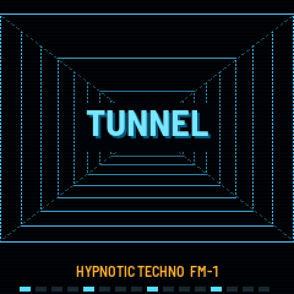

TUNNEL FM-1
a hard, hypnotic Detroit techno machine for the M-VAVE FM-1 · · play it in your browser
This is the real firmware, run unchanged on an emulated FM-1 by fm1-emu. Press Start in the emulator, then play with your computer keyboard or a MIDI keyboard. Chrome or Edge work best.
Sound stuttering? The FM-1 runs at 240 MHz; the emulator starts lower to suit slower computers. Raise Clock under the emulator if your computer keeps up. The first start downloads the firmware (600 KB). Space on the computer keyboard is PLAY.
Playing it
Press PLAY on the panel (Space in the emulator) to start the loops. Turn PRESETS for the 128 presets; a new one comes in on the next bar.
| Control | What it does |
|---|---|
| PLAY | start / stop |
| PRESETS | the preset (on the next bar while playing) |
| SELECT / SEL | the track: KICK, SNARE, CL HAT, OP HAT, PERC, BASS, STAB, BELL |
| ALGORITHM | TUNNEL: the filter closes, the delay and the reverb swell |
| HOME | every loop and its playhead; K1..K4 SWEEP, FEEDBACK, BPM, DRIVE. White keys F3..F4 mute the eight tracks, G4..G5 select one |
| SEQ | the selected track's steps on the 16 white keys (OCT−/OCT+: 1-16 / 17-32); K1..K4 LENGTH, RATE, ROTATE, ROOT. Hold a step: NOTE, VELOCITY, RATCHET, CHANCE; SEQ while holding: slide |
| EDIT | the track's sound, two pages |
| ENV | the track's mix: LEVEL, PAN, DELAY, REVERB |
| FX | DELAY › REVERB › MASTER |
| LFO | the motion LFO: RATE, DEPTH, DEST, SHAPE |
| GLO | TEMPO › DECKS (A drums, B bass and stab, C bell: each from any preset, on the next bar) › SETUP |
| REC | the keys play the selected track; ARP arpeggiates what you hold |
Every sound is synthesized: no samples. Unofficial: not affiliated with M-VAVE. The emulator is Joakim Eriksson's; TUNNEL FM-1 is MPL-2.0.